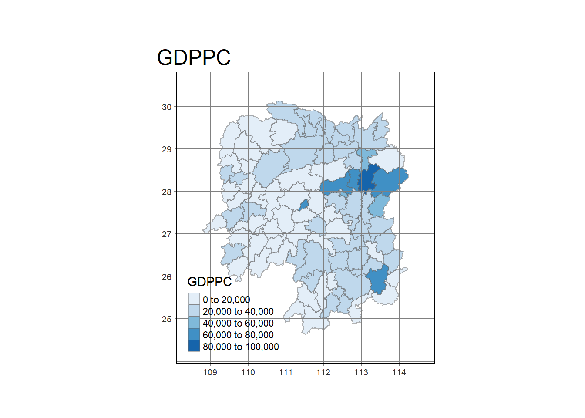

pacman::p_load(tmap, sf, sfdep, tidyverse, knitr)In-class Exercise 3: Spatial
Hidden: In-Class Lecture notes
In-Class Lecture Notes
“In real world, there is no concept of equality.” – Prof Kam
### Take-home Exercise notes:
- drop_NA() outside of region
- do not save map as object class; will take very long
- e.g. do not do map_name <- tmap_(...)
- instead just call and render directly: tm_shape(...)
### Dependency Ratio Plot
- First: check for statistical significance,
- Then, plot/test for null hypothesis == normally distributed
- In geospatial, we don't test for `normality`, we test for `spatial randomness` : whatever is observed in space is randomly distributed
- Similar to default assumption that distributions are Normal, default assumption
- Worth checking; not all
- `Dependency Ratio`: Number of non-working people / Number of working people
- High chance that dependency ratio is not randomly distributed;
- Socio-economic factors (eg private homes, "good" schools, workers)
- SES-locales can affect crime rates, electricity consumption,
=> Concept of `Spatial Inequality`: This world is not equal
### Tobler's First Law of Geography:
Everything is related to everything else, but near things are more related than distant things
### Spatial Weights
- Spatial weights help to parse spatial dependency
- Use of `adjacency` or `neighbours` as a frame to examine dependency
- Neighbourhood search: neighbours or not neighbours
- How do we qualify 'neighbourliness'?
- ADJACENCY - If vertex/edges touching, then neighbours
- DISTANCE - If within certain distance, then neighbours
- binary, (1/0) neighbourhood stats
- INVERSE DISTANCE - 1/distance
- gives higher weightage to nearer neighbours; Tobler's
- In the real world, not everything is adjacency -- islands are not touching
- If using hex-based map, also
- Tobler's first law: not touching but also has direct effects
- Use of hexagon binning: MODIFIED AREA UNIT
- Planning Subzone has huge irregularities e.g. large areas (deployment area), oddly shaped long areas etc
- Hexagons are one of most compact tessellating shapes
- Modern city design work uses grids -- rare, not very usual (eg Punggol)
- QUEEN'S CONTIGUITY: "So long as they touch"; any point on edge is vertex
- LAGGED CONTINUITY
- Lag 1: all adjacent neighbours
- Lag 2: adjacent neighbours' neighbours PLUS Lag 1;
- All levels of lag include previous levels;
- Hence, see correllogram: influence gradually wanes over distance
- EXAMPLE: Where to put Pizza Hut to minimise drive time, maximize food quality
- Look at real estate to identify largest expected market share, penetration
- If region is considered water or unnecessary, region can be dropped as rows
- Has to be excluded from consideration, otherwise will have geometric errors
- Will also mess with Moran's I calculations
- Use of ROW-STANDARDISED WEIGHTS to avoid bias
- Since weights matrix is a matrix, diagonals are zero, symmetric about diagonal
- Also possible to calculate COLUMN-STANDARDISED METRICS with similar effect
- GLOBAL Measure are for mathematical understanding;
- LOCAL measures are more interesting
- GDPPC in any regions will be unevenly spatially distributed
- Aside from capital, may have secondary city: second region of prosperity & development as growth centre
### Spatial Dependency
- When measuring rainfall, not every region has a rainfall station. How do we do this for all region?
- Use interpolation for uncovered regions + concept of Spatial Dependency
### Spatial Autocorrelation
- Typical correlation compares 2 different features;
- Spatial Autocorrelation compares one feature, of self vs neighbour
- Similar formula to correlation coefficient
- Spatial Autocorrelation tests (Moran's I, Geary's C) tries to reject the null hypothesis that "things are randomly distributed in space"
- Positive Spatial Autocorrelation: Pattern of clustering, e.g. high is found near to high
- Negative Spatial Autocorrelation does not mean randomness! Instead, it follows some ordered pattern (e.g. checkerboard -- high surrounds low, low surrounds high); searching for outliers where different from surroundings
- Spatial Autocorrelation suggests non-random patterns
- in Spatial Data, go directly to monte carlo simulation
### LISA
- Helps to identify clusters (high-high, low-low) and outliers (high-low, low-high) ==> regions of positive/negative spatial autocorrelation
- hence quadrant 5, "none"
- For all tests, we only highlight Spatial Autocorrelation AND high statistical significance
- Why might region not be statistically significant?
- Not enough neighbours; test is uncertain
- Enough neighbours, but data just not stat-significant
### Gi*
- For Gi*, should always be distance-based;
- Moran's I, Geary's C can be contiguity or distance-based; but Getis-Ord should always be distance-based
- Evolved from work on dengue transmissions; hence distance is more valuable
- Gi does not count itself, Gi* counts itself
### Mann-Kendall
- Useful for time-series data;
- Hunan GDPPC is single-instance, but most effects happen over space and time; thus, it's useful to consider time
- A "sign" statistic:
- compares value at time j vs at time k;
- outputs either +1 if decreasing, -1 if increasing, or 0 if no change
- does not consider output, only test for monotonicity and "interprets the relationship"
- cannot have breaks in timeseries; eg if COVID, add datapoint of 0 to keep it going
- Note: this is nonspatial, only statistical
### Emerging Hotspot EHSA
- Space & time analysis improvement over Mann-Kendall
- Instead using Gi* instead of value
- Compares Gi* over time -- increasing or decreasing
- Need to transform data into SPACETIME CUBE
- x, y dimensions of attribute a
- z-dimension of time
- `sfdep` allows construction of spacetime cube
Spatial Weights
Overview
- See also In-Class Exercise 2: GLSA and In-Class Exercise 2: EHSA
Getting Started - Import packages
This function calls pacman to load sf, tidyverse, tmap, knitr packages;
tmap: For thematic mapping; powerful mapping packagesf: for geospatial data handling, but also geoprocessing: buffer, point-in-polygon count, etc- batch processing over GIS packages; can handle tibble format
sfdep: creates space-time cube, EHSA; replaces spdeptidyverse: for non-spatial data handling; commonly used R packageknitr: generates html table
Loading the data
Hunan: geospatial dataset in ESRI shapefile format- use of
st_read()to import assfdata.frame$geometrycolumn is actually a list inside thedfcell; that’s the power of the tibble dataframe- “features” of
simple featuresrefers to geometric features eg point line curve etc
- note projection is
WGS84; see `88
- use of
hunan2012: attribute format in csv format- use of
read_csv()astbl_dfdata.frame
- use of
- !IMPORTANT! to retain geometry, you must left join to the
sfdataframe (eg you can also hunan2012 right join hunan)- without
sfdataframe, normal tibble dataframe will drop the geometry column
- without
show code
hunan <- st_read(dsn = "data/geospatial",
layer = "Hunan")Reading layer `Hunan' from data source
`C:\1darren\ISSS624\In-class_Ex\In-class_Ex3\data\geospatial'
using driver `ESRI Shapefile'
Simple feature collection with 88 features and 7 fields
Geometry type: POLYGON
Dimension: XY
Bounding box: xmin: 108.7831 ymin: 24.6342 xmax: 114.2544 ymax: 30.12812
Geodetic CRS: WGS 84show code
hunan2012 <- read_csv("data/aspatial/Hunan_2012.csv")
hunan_GDPPC <- left_join(hunan,hunan2012)%>%
select(1:4, 7, 15)Plot a chloropleth of GDPPC
show code
#qtm(hunan, "GDPPC") +
# tm_layout(main.title = "GDPPC", main.title.position = "right")
tm_shape(hunan_GDPPC) +
tm_fill(col = "GDPPC",
style = "pretty",
palette = "Blues",
title = "GDPPC") +
tm_borders(alpha = 0.5) +
tm_layout(main.title = "GDPPC",
inner.margins = c(0.1, 0.1, 0.1, 0.1),
outer.margins = c(0.1, 0.1, 0.1, 0.1)
) +
tm_grid(alpha = ) 
Deriving QUEEN contiguity weights
mutateis function that creates new column from previous column datasst_contiguitycreatesnbneighbour matrix (QUEEN contiguity, by default)st_weightscreates row-standardised weights (style="W") fromnbobject- One-step function using
sfdep; a wrapper forspdepbut writes output intosfdataframe
show code
wm_q <- hunan_GDPPC %>%
mutate(nb = st_contiguity(geometry),
wt = st_weights(nb, style = "W"),
.before = 1)